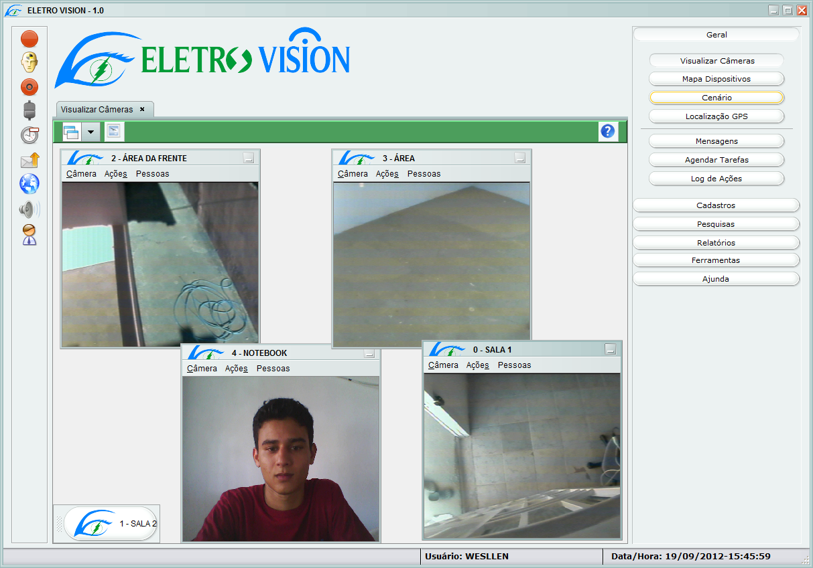
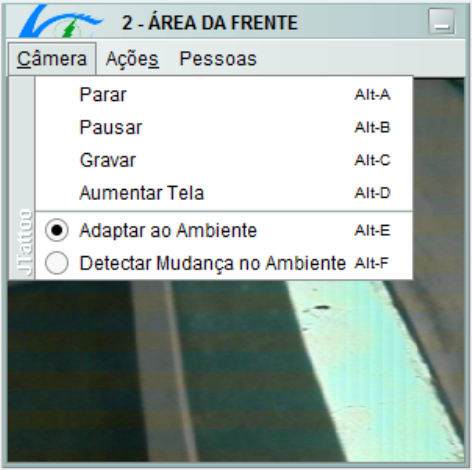
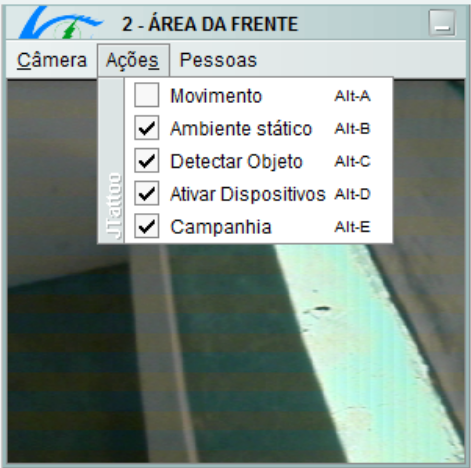
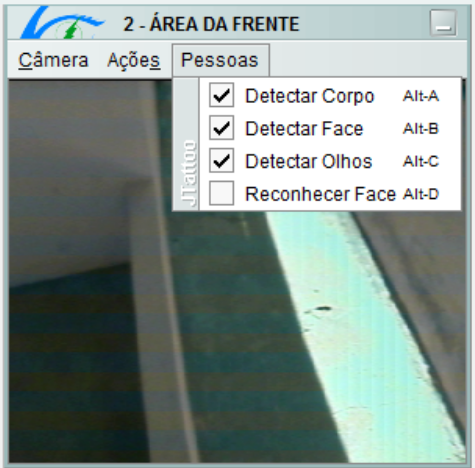
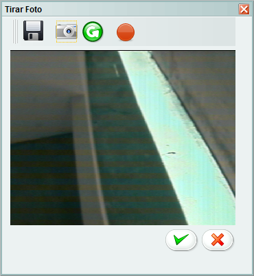

Visualizar Câmeras
Tela responsável por exibir todas as câmeras ativas em operação no sistema, as câmeras são exibidas em mini-janelas com todas opções de configuração individual.
Na barra superior (verde) se encontra a forma de visualização das janelas, que podem ser exibidas em cascata ou lado-a-lado, outra opção é a exibição da última foto provenimente de algum movimento detectado. Abaixo será explicado como funciona as configurações das mini-janelas.

- Parar: A execução da câmera é finalizada, caso a câmera esteja parada essa opção é alterada para Iniciar.
- Pausar: congela a imagem da câmera por tempo indeterminado, impossibilitando o processamento da mesma. quando ela estar pausada essa opção é alterada para Continuar....
- Gravar: inicia a gravação automática da câmera, quando houver um movimento a gravação é disparada e se a câmera não identificar movimento durante 30 segundos a gravação é encerrada.
- Aumentar Tela: abre outra tela exibindo a câmera selecionada com opção de tirar foto da câmera e gravar vídeos manualmente (Última figura).
- Adaptar ao Ambiente: opção onde a câmera de adapta constantemente ao ambiente, isso significa que mesmo se o ambiente for alterado, essa mudança não fará diferença no processamento. Essa opção é útil para detecção de movimento.
- Detectar Mudança no Ambiente: opção que leva em consideração o estado do ambiente no momento em que a câmera foi iniciada. caso ocorra alguma alteração no ambiente o sistema identifica erra alteração e toma as decisões definidas pelo usuário.
 Texto aqui...
 Texto aqui...
 Texto aqui...